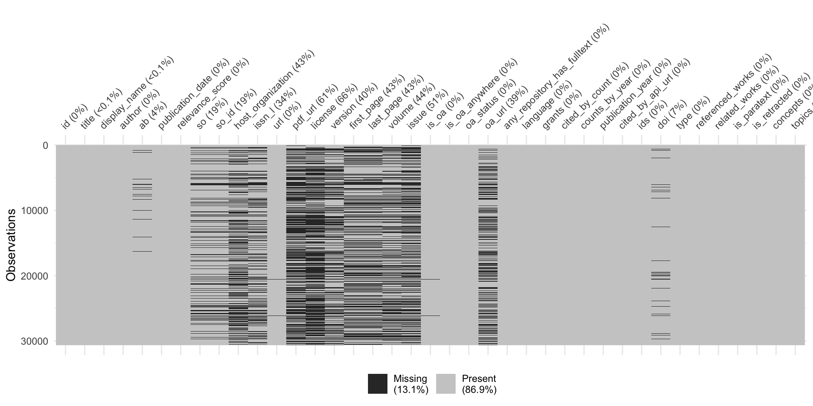
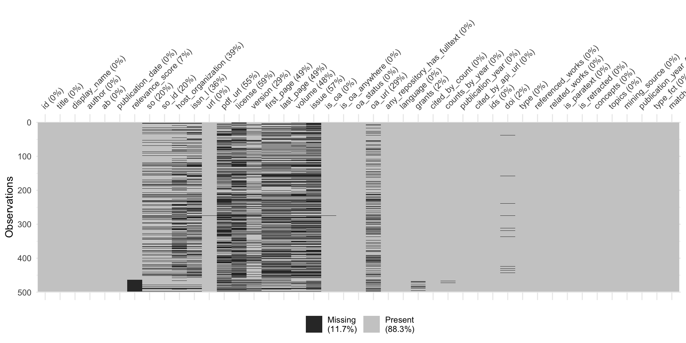

| Sitzung | Datum | Thema (synchron) |
|---|---|---|
| 1 | 30.10.2024 | Kick-Off |
| 2 | 06.11.2024 | Workflow & Analysestrategie I |
| 3 | 13.11.2024 | Workflow & Analysestrategie II |
| 4 | 20.11.2024 | Gruppenarbeit |
| 5 | 27.11.2024 | All things R: Datensatzvorstellung & Refresher |
| 6 | 04.12.2024 | Update zum Workflow I |
| 7 | 11.12.2024 | Gruppenarbeit |
| 8 | 18.12.2024 | All things R |
| 9 | 08.01.2025 | Update zum Workflow II |
| 10 | 15.01.2025 | Gruppenarbeit |
| 11 | 22.01.2025 | All things R |
| 12 | 27.01.2025 | Sondertermin: Vorstellung Projektseminar |
| 13 | 29.01.2025 | Abschlusspräsentation (inkl. Feedback) |
| 1 | 05.02.2025 | 🏁 Semesterabschluss: Projektbericht & Evaluation |
Datensatzvorstellung & RefreshR
Session 05
27.11.2024
Seminarplan
Agenda
Vorstellung der Datengrundlage
Überblick über die Datensätze und Ihre Erhebung
Wir starten mit dem Resultat
Beschreibung des finalen Datensatzes
Resultat der Erhebung (26.11.2024) sind drei Datensätze:
reference.qs➜ vorgefilterter, finaler Datensatz mit 32518 Einträgenreferences_full.qs➜ Datensatz (bzw. “Liste”) mit verschiedenen Datensätzen (OpenAlex, Scopus & Kombination) in verschiedenen Verarbeitungstufenreferences_import_bibliometrix.RDA➜ Umstrukturierte Version vonreferences.qsfür den einfachen Import in Bibliometrix
- Alle Erhebungsschritte sind auf der Kurspage unter Datenerhebung dokumentiert
- Im Folgenden kurze Darstellung von ausgewählten Details
Mining ➜ Überprüfen ➜ Kombinieren
Überblick über den Erhebungsprozess
Initiale OpenAlex-API Abfrage
- Verschiedene Qualitätskontrollen (Duplikate & Missings von zentralen Variablen, wie ID, Abstract & DOI)
Scopus-API Abfrage
- Verschiedene Qualitätskontrollen (Duplikate & Missings von zentralen Variablen, wie ID, Abstract & DOI)
Abgleich & Kombination der Referenzen beider API-Abfragen
Identifikation von Scopus-Quellen, die in OpenAlex-Datensatz fehlen
Ergänzung (eines Teils) der fehlenden Scopus-Quellen durch erneute OpenAlex-API Abfrage (DOI als Grundlage)
Substition fehlender OpenAlex-Abstracts aus Scopus-Daten
First Step
Initiale OpenAlex-API Abfrage
references$openalex$api <- openalexR::oa_fetch(
entity = "works",
title_and_abstract.search =
'("artificial intelligence" OR AI OR "chatbot" OR "AI-based chatbot" OR
"artificial intelligence-based chatbot" OR "chat agent" OR "voice bot" OR
"voice assistant" OR "voice-based assistant" OR
"conversational agent" OR "conversational assistant" OR "conversational AI" OR
"AI-based assistant" OR "artificial intelligence-based assistant" OR
"virtual assistant" OR "intelligent assistant" OR "digital assistant" OR
"smart speaker" OR
chatgpt OR "google gemini" OR "google bard" OR "bing chat" OR
"microsoft copilot" OR "claude ai" OR "perplexity ai")
AND
(anthropomorphism OR humanlike OR humanness OR humanized OR
"user experience" OR UX OR usability OR trust* OR
"conversational experience" OR CUX OR "conversation design" OR
safety OR privacy)',
publication_year = "2016-2025",
primary_topic.field.id = c(
"fields/33", # Social Science
"fields/32" # Psychology
),
language = "en",
type = c("article", "conference-paper", "preprint"),
verbose = TRUE
)Fehlen Informationen für zentrale Variablen?
Überprüfung der Datenqualität: Missing Values
Gibt es doppelte Einträge?
Überprüfung der Datenqualität: DOI
references$openalex$api %>%
# exclude ID duplicates
distinct(id, .keep_all = TRUE) %>%
# exclude cases without DOI
filter(!is.na(doi)) %>%
group_by(doi) %>%
summarise(n = n()) %>%
frq(n, sort.frq = "desc")n <integer>
# total N=26496 valid N=26496 mean=1.00 sd=0.02
Value | N | Raw % | Valid % | Cum. %
----------------------------------------
1 | 26488 | 99.97 | 99.97 | 99.97
2 | 8 | 0.03 | 0.03 | 100.00
<NA> | 0 | 0.00 | <NA> | <NA>Besonderheiten und Herausforderungen
Besonderheiten der Scopus-API-Abfrage:
- Custom functions statt R-Paket ➜ Output weniger strukturiert
- Strikteres Charakterlimit für Scopus-API-Abfrage als bei OpenAlex ➜ Erhöhter Aufwand bei Qualitätskontrolle
Herausforderungen bei der Kombination der Daten:
- Unterschiedliche Struktur der Datensätze (z.B. Variablennamen, Autorenangaben etc.)
- Unterschiedliche Kategorisierung der Referenzen (z.B. in Bezug auf Forschungsfeld oder Publikationstyp)
- Fehlende Abstracts in OpenAlex-Datensatz ➜ Substitution durch Scopus-Daten
Finalisierung der Daten
Code zur Erstellung des finalen Datensatzes
references$openalex$correct <- references$openalex$combined$raw_updated %>%
filter(type %in% c("article", "conference-paper", "preprint")) %>%
filter(language == "en") %>%
mutate(
# Create additional factor variables
publication_year_fct = as.factor(publication_year),
type_fct = as.factor(type),
# Clean abstracts
ab = ab %>%
str_replace_all("\ufffe", "") %>% # Remove invalid U+FFFE characters
str_replace_all("[^\x20-\x7E\n]", "") %>% # Optional: Remove other non-ASCII chars
iconv(from = "UTF-8", to = "UTF-8", sub = ""), # Ensure UTF-8 encoding
)Überblick finaler Datensatz
Struktur des finalen Datensatzes
Rows: 32,518
Columns: 42
$ id <chr> "https://openalex.org/W3013998503", "https…
$ title <chr> "Human Trust in Artificial Intelligence: R…
$ display_name <chr> "Human Trust in Artificial Intelligence: R…
$ author <list> [<data.frame[2 x 12]>], [<data.frame[1 x …
$ ab <chr> "Artificial intelligence (AI) characterize…
$ publication_date <chr> "2020-03-26", "2018-04-12", "2019-01-29", …
$ relevance_score <dbl> 986.2187, 888.2551, 623.6296, 593.6381, 58…
$ so <chr> "Academy of Management Annals", "Business …
$ so_id <chr> "https://openalex.org/S27614628", "https:/…
$ host_organization <chr> "Routledge", "Elsevier BV", "Elsevier BV",…
$ issn_l <chr> "1941-6520", "0007-6813", "0747-5632", "09…
$ url <chr> "https://doi.org/10.5465/annals.2018.0057"…
$ pdf_url <chr> NA, NA, NA, NA, "https://link.springer.com…
$ license <chr> NA, NA, NA, NA, "cc-by", "cc-by", NA, NA, …
$ version <chr> NA, NA, NA, NA, "publishedVersion", "publi…
$ first_page <chr> "627", "577", "304", "611", "2749", "e19",…
$ last_page <chr> "660", "586", "316", "623", "2767", "e19",…
$ volume <chr> "14", "61", "97", "35", "26", "4", "61", "…
$ issue <chr> "2", "4", NA, "3", "5", "2", "4", "6", "21…
$ is_oa <lgl> FALSE, FALSE, FALSE, FALSE, TRUE, TRUE, FA…
$ is_oa_anywhere <lgl> FALSE, FALSE, FALSE, TRUE, TRUE, TRUE, FAL…
$ oa_status <chr> "closed", "closed", "closed", "green", "hy…
$ oa_url <chr> NA, NA, NA, "https://pure.uva.nl/ws/files/…
$ any_repository_has_fulltext <lgl> FALSE, FALSE, FALSE, TRUE, TRUE, TRUE, FAL…
$ language <chr> "en", "en", "en", "en", "en", "en", "en", …
$ grants <list> NA, NA, NA, NA, NA, NA, NA, NA, <"https:/…
$ cited_by_count <int> 948, 1179, 614, 487, 281, 1568, 688, 511, …
$ counts_by_year <list> [<data.frame[5 x 2]>], [<data.frame[7 x 2…
$ publication_year <int> 2020, 2018, 2019, 2020, 2020, 2017, 2019, …
$ cited_by_api_url <chr> "https://api.openalex.org/works?filter=cit…
$ ids <list> <"https://openalex.org/W3013998503", "htt…
$ doi <chr> "https://doi.org/10.5465/annals.2018.0057"…
$ type <chr> "article", "article", "article", "article"…
$ referenced_works <list> <"https://openalex.org/W1155971952", "htt…
$ related_works <list> <"https://openalex.org/W4289755905", "htt…
$ is_paratext <lgl> FALSE, FALSE, FALSE, FALSE, FALSE, FALSE, …
$ is_retracted <lgl> FALSE, FALSE, FALSE, FALSE, FALSE, FALSE, …
$ concepts <list> [<data.frame[19 x 5]>], [<data.frame[17 x…
$ topics <list> [<tbl_df[12 x 5]>], [<tbl_df[12 x 5]>], […
$ mining_source <chr> "openalex_initial", "openalex_initial", "o…
$ publication_year_fct <fct> 2020, 2018, 2019, 2020, 2020, 2017, 2019, …
$ type_fct <fct> article, article, article, article, articl…Lern die Daten kennen!
Überblick über die nächten Schritte
- Erneute Filterung der Daten bzw. Auswahl der relevanten Referenzen ➜ Eigene Query-Abfrage auf Basis der Abstracts
- Überprüfung der für die Analyse zentralen Variablen ➜ Sind weitere Bereinigung notwendig?
- Explorative Datenanalyse (EDA) zur Erkundung des Datensatzes ➜ Identifiaktion von Mustern und Auffälligkeiten
Custom query mit R
Auswahl der relevanten Referenzen
# Define patterns for each part of the search string
part1 <- paste(
"artificial intelligence|AI|chatbot|AI-based chatbot|artificial intelligence-based chatbot|chat agent",
"voice bot|voice assistant|voice-based assistant|conversational agent|conversational assistant",
"conversational AI|AI-based assistant|artificial intelligence-based assistant|virtual assistant",
"intelligent assistant|digital assistant|smart speaker|chatgpt|google gemini|google bard",
"bing chat|microsoft copilot|claude ai|perplexity ai", sep = "|"
)
part2 <- "misinformation"
# Apply the patterns to the column `ab` in the tibble `works`
misinfo <- refs %>%
mutate(
matches = str_detect(ab, regex(part1, ignore_case = TRUE)) &
str_detect(ab, regex(part2, ignore_case = TRUE))
) %>%
filter(matches)Missing Abstracts?
Überprüfung der zentralen Variablen
Viele Wege der Exploration
Nützliche Funktionen zur Datenexploration
- Grundsätzlich viel Funktionen & Pakete zur Überprüfung der Daten in R verfügbar
- Empfehlungen:
skimr::skim()für schnellen & umfassenden Überblick der Daten in Reasystats-verse für vertiefende Analysen in Rbibliometrixfür bibliometrische Analysen in R ➜biblioshiny()für Analyse mit GUI
Eure Fragen zu
Fragen zu R, Topic Modeling & Co.
Fragen zu
Wie identifiziert & entfernt man Paper-Duplikate mit R genau?
- Abhängig von der Definition von “Duplikat” (z.B. ein Kriterium oder mehrere Kriterien)
- siehe Beispiel auf der Folie Gibt es doppelte Einträge?
Wie führt man 2 Datensätze (z.B. den „normalen“ & den aus der forward- & backward-search) am einfachsten/unkompliziertesten zusammen?
- Abhängig von Datengrundlage (z.B. importierte .csv vs. Erhebung via OpenAlex-API) & Datenstruktur (z.B. mit
bind_rows(),merge(),left_join()etc)
Fragen zum Topic Modeling
In Bezug auf das Thema Topic Modeling: Würdest du uns empfehlen, Structural Topic Modeling (STM) anzuwenden oder denkst du, dass eines der anderen Verfahren der Themenmodellierung besser zu unserer Forschungsfrage passen könnte
- Schwierig zu beantworten, da STM auch “nur” ein Teil der Analyse sein kann
Wie sieht Topic Modelling mit Seed Words aus?
- z.B.
seededldaPaket (siehe Beispiele)
Fragen zur praktischen Arbeit mit
Gibt es in R eine Möglichkeit, dass mehrere Personen parallel an demselben Skript arbeiten können? Wenn nein, wie könnte man die Änderungen am besten zusammenführen?
- Keine gleichzeitge Arbeit an einem Dokument wie bei Google Docs, aber
Verwendung des RStudio-Servers (nicht zeitgleich, aber zumindest im selben Dokument)
git (sehr kompliziert)
- Empfehlung: Aufteilung anhand verschiedener Bereiche (Daten, Analyse, Interpretation) ➜ Code”gerüst” schreiben, an “neue” Daten anpassen
bibliometrix im Fokus
Refresh